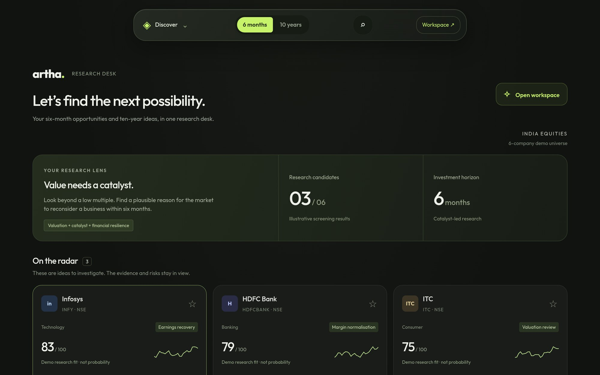
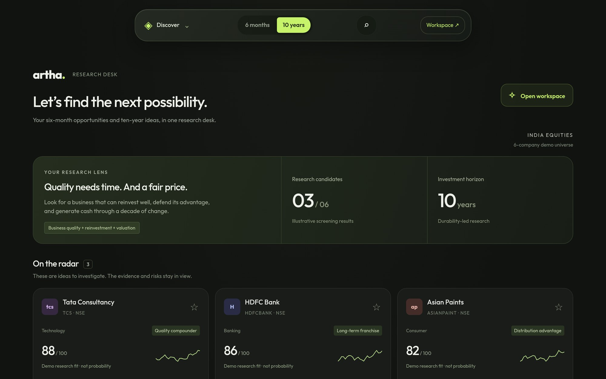
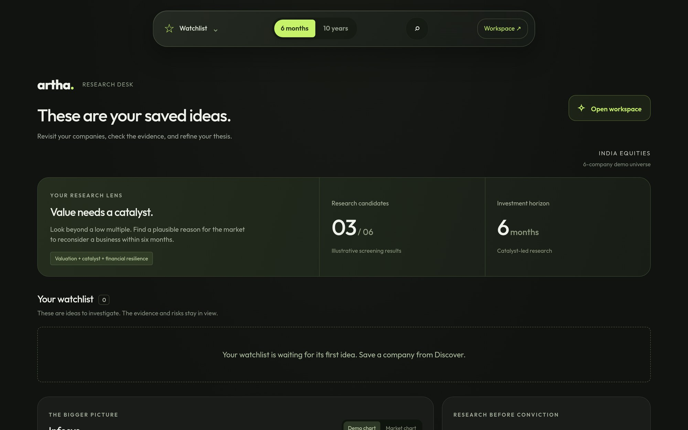
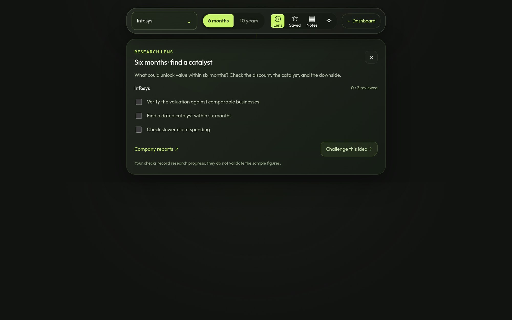
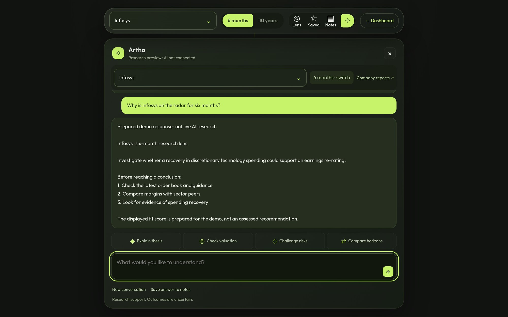
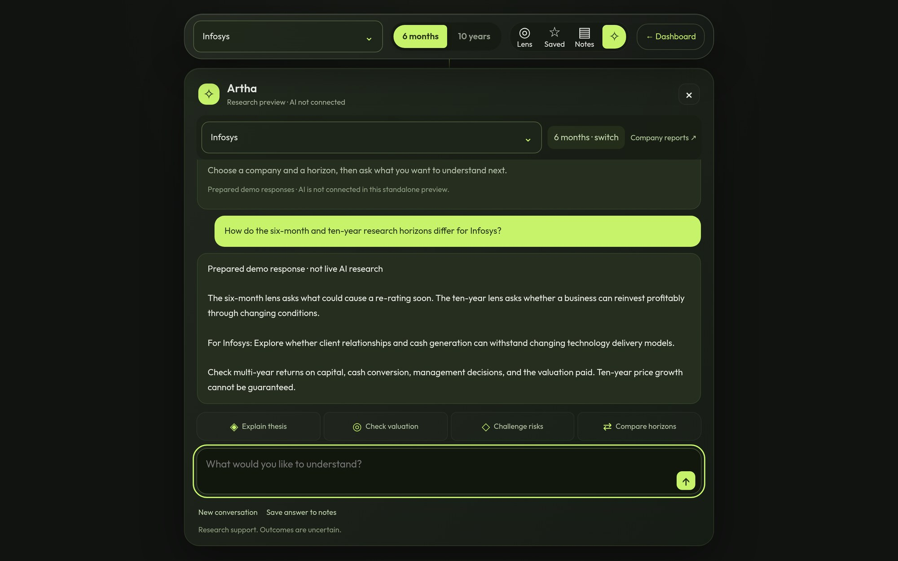
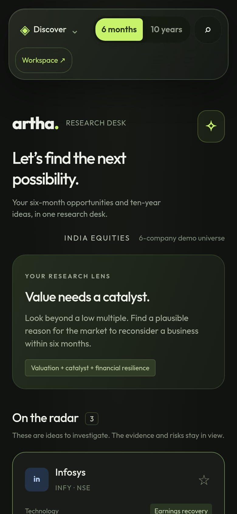

05 / Full case study
Artha
research before conviction.
A stock research workspace built for a single investor to look at Indian companies over six months and ten years.

The problem
How do you help one person slow down and test an investment idea before believing it?
Artha starts from a research lens rather than a hot tip. A six-month view looks for a business the market may re-rate on a catalyst; a ten-year view looks for quality at a fair price. Switching the horizon changes the lens and the companies on the radar.
From there the investor can save ideas, work through a checklist of what to verify, and ask questions of the research. Every score is labelled as a demo research fit, not a probability or a recommendation.
The sequence
From a possibility
to a tested idea.

The same screen on the ten-year horizon: "Quality needs time. And a fair price." brings a different set of companies forward.

Saved ideas live here. Until a company is saved from Discover, it says so plainly.

The research lens for Infosys turns the thesis into a short checklist: valuation, catalyst, and client spending.

The assistant answers from prepared research and is labelled "not live AI research", ending with steps to check before deciding.

A prompt that sets the six-month and ten-year cases side by side for the same company.

Discover in a single column with the horizon switch kept at the top.
A necessary boundary
Prepared research,
not advice.
Artha runs on prepared research for 6 demo companies. The assistant is not connected to a live AI model, and scores are demo research fit, not probabilities or recommendations. I designed it around one real person's way of researching, so the demo keeps them anonymous.